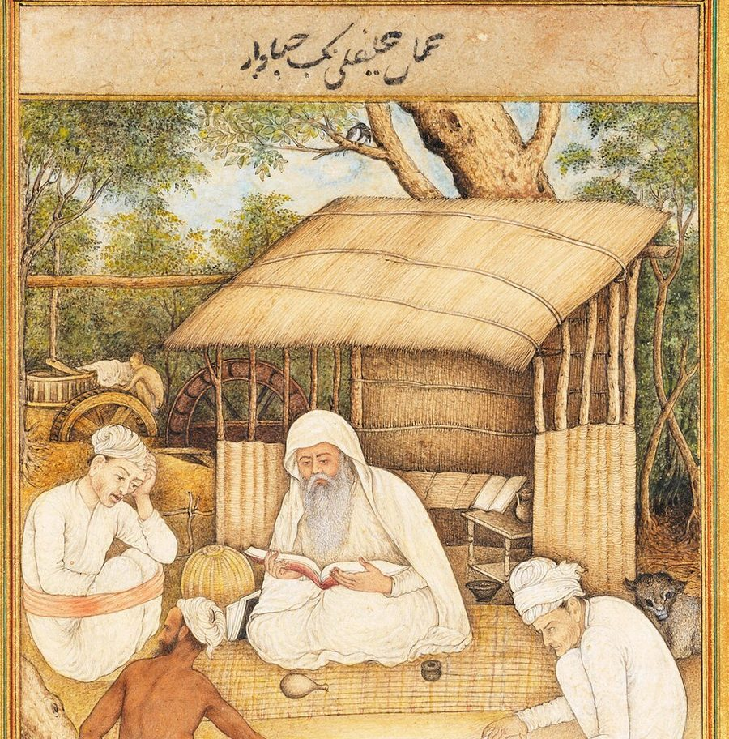

Астрологическая сессия
Глубокий разбор натальной карты и жизненных векторов. Астрология работает вместе с психологией.
- Личность и ресурс. Врождённые таланты, сильные стороны, зоны роста.
- Отношения. Личные сценарии, причины повторяющихся конфликтов, родовые программы и способы их нейтрализовать.
- Реализация и финансы. Ваши сферы максимальных результатов, миссия и предназначение.
На выходе вы получаете ясную картину векторов и препятствий, пошаговый план на 3–6 месяцев и конкретные акценты: что усилить, что отпустить, какие навыки развивать.